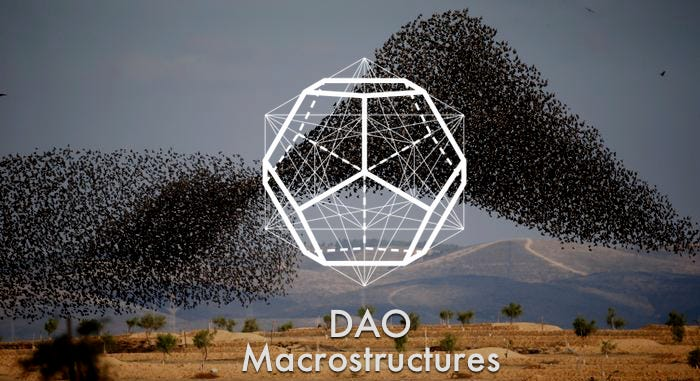
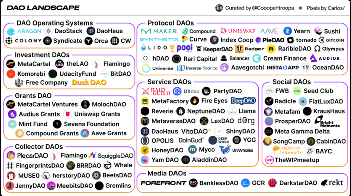
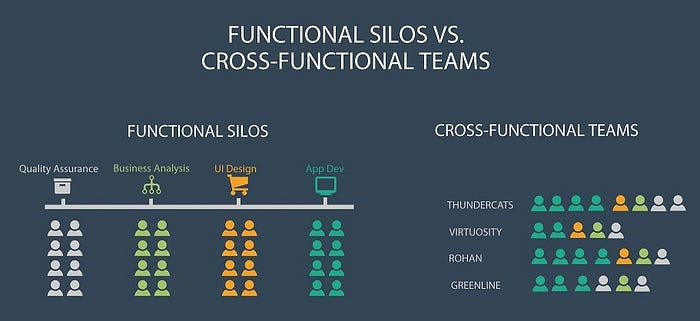
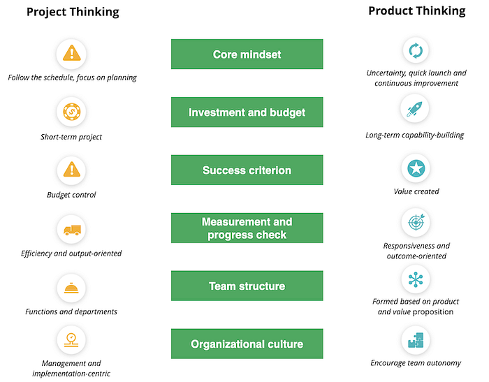
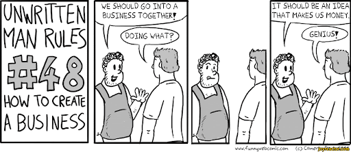
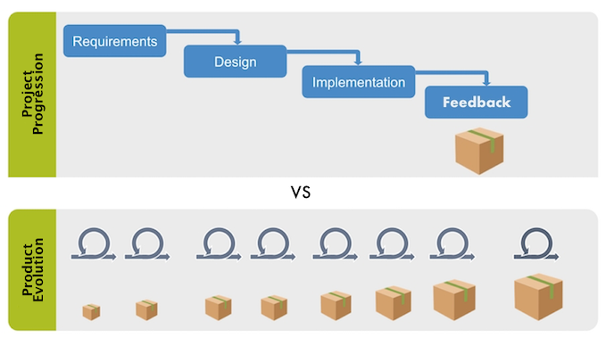

DAO Macrostructures
Originally published at https://justiceconder.medium.com/dao-macrostructures-8c65c374ac55

There have been several distinct evolutions of the crypto space. The genesis was Bitcoin, the first of its kind decentralized digital currency. The second was Ethereum which enabled fully programmable digital assets and smart contracts. Then came decentralized exchanges (AMMs), decentralized finance (Defi), and non-fungible tokens (NFTs).
We have yet another evolution taking place right now with the emergence of decentralizing autonomous organizations (DAOs) and they are making the coordination of decentralized groups possible. To say that the DAO space is exploding would be an understatement. Decentralization has expanded from tokens to exchanges and is now being adopted at the “level zero” of human cooperation.

What’s uniquely challenging about this situation is that the thing that is supposed to govern these new organizational entities is actively being built by them in the process. DAO’s across the entire ecosystem are boot loading their own governance systems. One of the primary motivations for employing a DAO to coordinate a communities activity is the elimination of organizational overhead. But in order to achieve this goal, a preexisting governance structure must already be in place. This presents something of a chicken and egg problem.
An initial and thoughtfully structured organizational architecture is required if coordination failure to be minimized and not exacerbated. The same caution and forethought required to organize any large software engineering program will be no less required here. In fact, the risk of overhead, miscommunication, and misalignment is even greater because the processes and procedures created by a DAO are immutable, intrinsically imbued with financial value, and operated by pseudo-anonymous individuals. What could go wrong?
I have every confidence that proven DAO design patterns have, and will continue to emerge as various approaches and experiments are tried within and across the burgeoning DAO ecosystem but we should not act as if we are the first ones trying to manage systematic coordination. In fact, we can and should apply much of what has been proven to work in other realms. I want to propose 4 initial macros structures taken from software delivery I believe DAOs would benefit by adopting.
Structure as Delivery Teams, not Specialist Groups
It is human nature to gather among similar individuals. Experts naturally gravitate to the other practitioners of their field. There’s nothing wrong with this by itself but if it represents the primary structure of your DAO it will present long-term problems if the goal is to produce integrated products and services. Large-scale software delivery approaches, therefore, make a distinction between teams and communities of practice (CoPs) spread across those teams and place a priority on the execution teams. There are proven benefits to organizing in this way.

Primarily, it encourages ownership and responsibility as a single team is responsible for the delivery and execution of a product vision. If only single sub-components of a product are being sourced from various specialist groups, who is responsible for its final delivery? The answer is nobody. It’s entirely possible in this scheme for every specialist group to provide their pieces and yet for the product to fail to achieve an integrated and holistic expression. In fact, it’s most likely this will be the case according to Conway’s Law. Cross-functional teams create deeply holistic and integrated products. Architecture follows organization. The alternative, a siloed service model, will invariably increase coordination overhead.
Think in terms of Products, not Projects
Again, it’s human nature to start projects. Projects are typically temporary endeavors that can be started, stopped, or put on pause indefinitely and at will. Starting a project or flitting between projects gives one the feeling that they are getting things done. Launching a product is an entirely different animal and a distinct change in perspective and mindset occurs when one shifts to thinking in terms of products instead of projects.

Products presuppose a value proposition, a value stream, users, revenue, and a return on investment while projects merely presuppose activity. Products are long-lived, not temporary. Product thinking forces an execution team to address the profit principle at the outset of the endeavor. Products have to ship and be maintained. Teams think about things differently when they know they’ll have to maintain and support a product rather than just hand it off to another team. For these and many other reasons, the most efficient organization organize around products, not projects.
Establish Economics as a First Principle
If the purpose of the DAO is value accrual to its members then starting any endeavor without a value proposition should be off the table. This is not to say that the only thing DAOs care about is money but if they value their continued existence, this must be the starting point. If it is not then the DAO does not have a viable long-term operating system.

Practically this means an explicitly stated value statement for every funding request and the expectation that those numbers are reassessed and voted on by my community on a recurring basis. We of all people should recognize this more than most as all that is done in this space is inextricably tied into value creation and transmission.
“Great companies are not in business to make money, they make money to stay in business and accomplish an important purpose.” — Tom Poppendieck
Deliver on a Regular and Established Cadence
I’ve never in my life seen a truly big-bang release go well. What proves to be most effective in every sphere of complex creation is the iterative and incremental delivery of user-facing value. This means demonstrating new capabilities on a regular and predictable cadence. It provides structure to the delivery teams and supports sustained confidence from stakeholders. This requires a certain mindset and planning upfront on how to slice a product vision into independently and incrementally valuable pieces.

This may sound like extra work but its value can’t be overstated. It produces an inspect and adapt life cycle that enables regular feedback, metrics evaluation, financial assessment, and community voting. This delivery clock rate then acts as the heartbeat of your entire organization and, once in place, can be rigorously measured, optimized, and planned against.
Conclusion
In conclusion, I’d like to circle back to my initial supposition. DAO’s shouldn’t necessarily be trying to totally reinvent the wheel of human coordination but instead enhance what is already being done and working in others contexts of software delivery and open-source software. There is an analogy here with Defi. It didn’t start with impossibly complex financial instruments only possible on a blockchain. It started with basic borrowing and lending and built up from there. Starting with the above macro structure sets a machine of delivery in place. It establishes the pistons of the engine (delivery teams), their output (products), the fuel of sustainability (an expected ROI), and an engine RPM (cadence). To summarize, the above macro structures provide a framework for creating cross-functional teams that create and support profitable products on a regular cadence and do so in a way that eliminates or at least dramatically minimizes coordination overhead. I fear anything less will prove to be intractable complex.
I’ve been working as a developer and agile coach for over ten years. I'm deeply passionate about the blockchain space and about Ethereum specifically. It's my goal to translate my previous work experience into working full-time for a DAO. If you like this post or any of my other writings, please reach out, and let's see if we can build the future together. To learn more: justiceconder.com
102
102